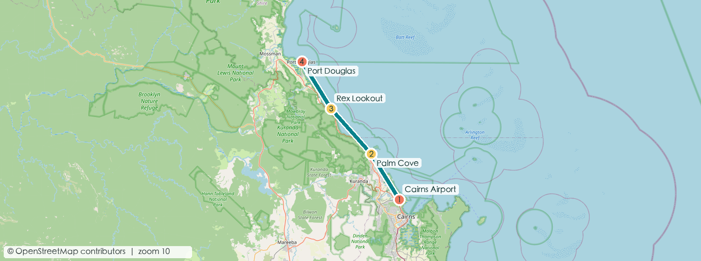
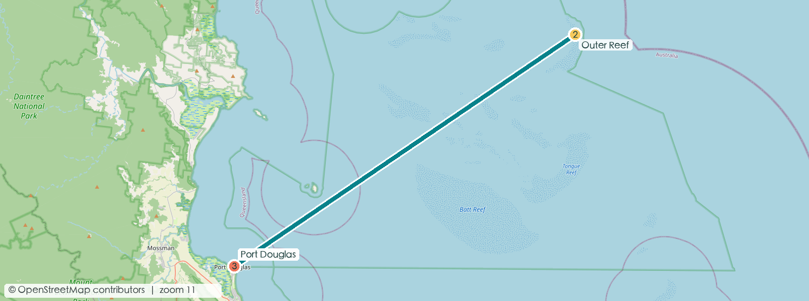
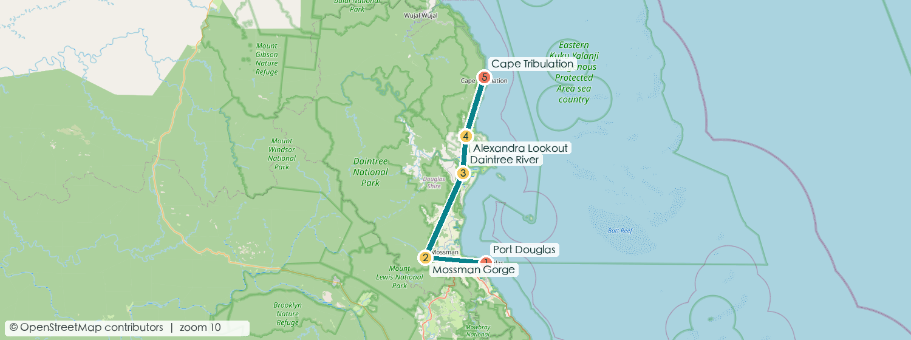
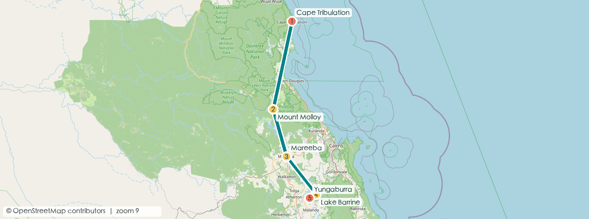
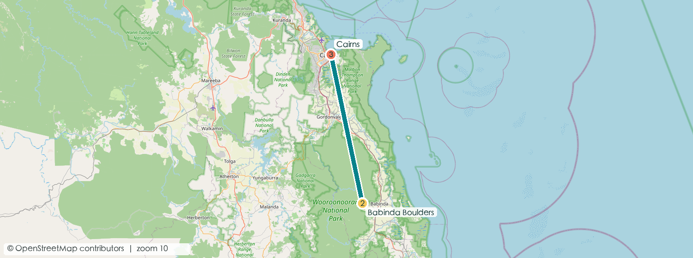
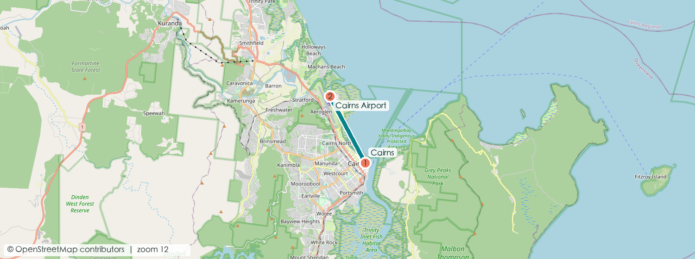

10天 9晚建议版本
2人情侣慢游
A$6,700±双人参考总支出
约 650 km自驾主线
一眼看懂路线
Cairns Airport→Port Douglas ×2→Cape Tribulation ×1→Yungaburra ×2→Cairns ×4→Brisbane
更省钱的收尾：若 9/25 有合适的晚班机，取消最后一晚 Cairns，白天只排轻松市区活动，预计省 A$180–300；潜水后须遵守运营商给出的禁飞间隔。
每日行动卡

约 A$170DAY 1 · 9/17
机场 → 海岸公路 → Port Douglas
- 午后 取车，沿 Captain Cook Highway 北上；Rex Lookout 看海岸弧线。
- 傍晚 Four Mile Beach 散步、看日落色温。
- 晚餐 Salsa Bar：热带食材、海鲜和轻松度假氛围；想省钱可选 The Court House Hotel。
车程约 1小时轻松适应日

约 A$650–780DAY 2 · 9/18
Outer Reef 全天船
- 07:30 码头报到，选择平台型 Quicksilver 或偏水下体验的 Silversonic。
- 白天 浮潜、半潜艇/玻璃底船；期待珊瑚花园、鹦嘴鱼与海龟机会。
- 晚餐 Zinc 或 Melaleuca，点本地礁鱼、虾或袋鼠肉共享。
最优先预订晕船药提前服

约 A$270DAY 3 · 9/19
Mossman Gorge → Daintree → Cape Tribulation
- 上午 峡谷短步道，看巨石溪流与低地雨林。
- 午后 Daintree River 鳄鱼生态船，再搭车辆渡轮北上。
- 途中吃 Daintree Ice Cream Co：用自家果园热带水果做每日组合口味。
避免黄昏赶路下载离线地图

约 A$220DAY 4 · 9/20
雨林木栈道 → Atherton Tablelands
- 清晨 Dubuji Boardwalk，观察扇棕与红树林过渡带。
- 午后 原路渡河后转入高原；抵达 Yungaburra 休息。
- 晚餐 Lake Barrine 茶室或村内餐馆；期待司康、当地奶制品和乡村份量。
长驾驶日约 4小时净车程

约 A$190DAY 5 · 9/21
火山湖、瀑布与鸭嘴兽
- 上午 Lake Eacham 环湖步道，天气好可游泳。
- 午后 Millaa Millaa Falls；回程看 Curtain Fig Tree。
- 黄昏 Peterson Creek 安静等鸭嘴兽，少说话、不用闪光灯。
免费景点多性价比最高日

约 A$240DAY 6 · 9/22
高原咖啡 → Cairns
- 上午 Lake Barrine 游船或湖边早餐，之后品尝高原咖啡。
- 午后 下山回 Cairns、还车或办理市区酒店入住。
- 晚餐 Prawn Star：船上吃虾、泥蟹与生蚝，体验直接但座位有限。
入住后步行海鲜夜

约 A$420–500DAY 7 · 9/23
Kuranda：火车上、缆车下
- 上午 Scenic Railway 看峡谷、瀑布与历史工程。
- 午后 村内午餐后乘 Skyrail 穿越雨林冠层，两个中途站都值得下车。
- 晚餐 Ochre：尝鳄鱼、袋鼠或本土香料料理，比纯观光餐更有记忆点。
联票提前订不需自驾

约 A$260–420DAY 8 · 9/24
慢享日：按摩、咖啡与好餐厅
- 上午 Esplanade Lagoon 与海滨步道；咖啡可选 Blackbird。
- 下午 预约 60–90 分钟按摩或酒店 Spa，把连续公路日的疲劳释放掉。
- 晚餐 Tamarind 做精致泰式，适合安排一次正式约会晚餐。
恢复体力Spa需预约

约 A$80–600DAY 9 · 9/25
唯一弹性日：按天气补位
- 晴天 Green Island、Fitzroy Island 或热气球三选一。
- 普通天气 Cairns Aquarium、植物园、夜市与咖啡巡游。
- 晚班机版 下午回酒店取行李，预留 2小时到机场。
只留一天机动可省一晚

约 A$180–350DAY 10 · 9/26
Cairns → Brisbane
- 上午 若保留住宿：从容早餐、最后采购。
- 起飞前 国内线建议提前约 2小时到机场；核对托运行李额度。
- 备选 若已乘 9/25 晚班机，本日住宿和早餐预算归零。
离境日航班价另计
住宿与预算总表
| 日期 | 入住地点 | 建议入住/退房 | 双人房预算 | 选择逻辑 |
|---|
| 9/17–9/19 | Port Douglas · 2晚 | 14:00 / 10:00 | A$220–320/晚 | 步行到 Macrossan St 或码头，减少晚餐后开车。 |
| 9/19–9/20 | Cape Tribulation · 1晚 | 14:00 / 10:00 | A$180–280/晚 | 选有餐厅或厨房的住处；雨林区夜间选择少。 |
| 9/20–9/22 | Yungaburra · 2晚 | 14:00 / 10:00 | A$170–260/晚 | 住村内便于黄昏步行找鸭嘴兽。 |
| 9/22–9/26 | Cairns · 4晚 | 14:00 / 10:00 | A$190–300/晚 | Esplanade/码头附近；9/25晚飞可减为3晚。 |
预订闭环
价格为 2026 年规划期的双人参考区间，不等于实时库存报价；实际以运营商、酒店和航空公司结算页为准。雨林道路、渡轮、海况与活动时间应在出发前再次核对。